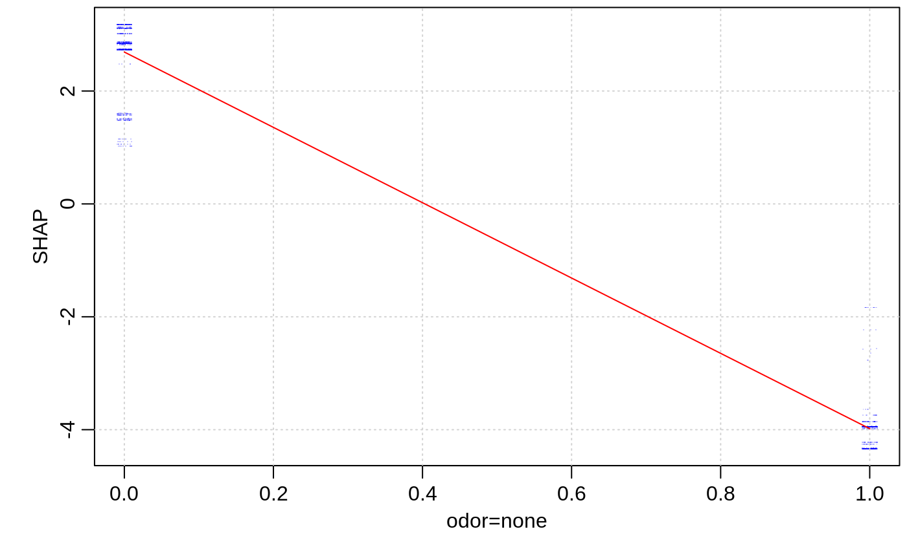
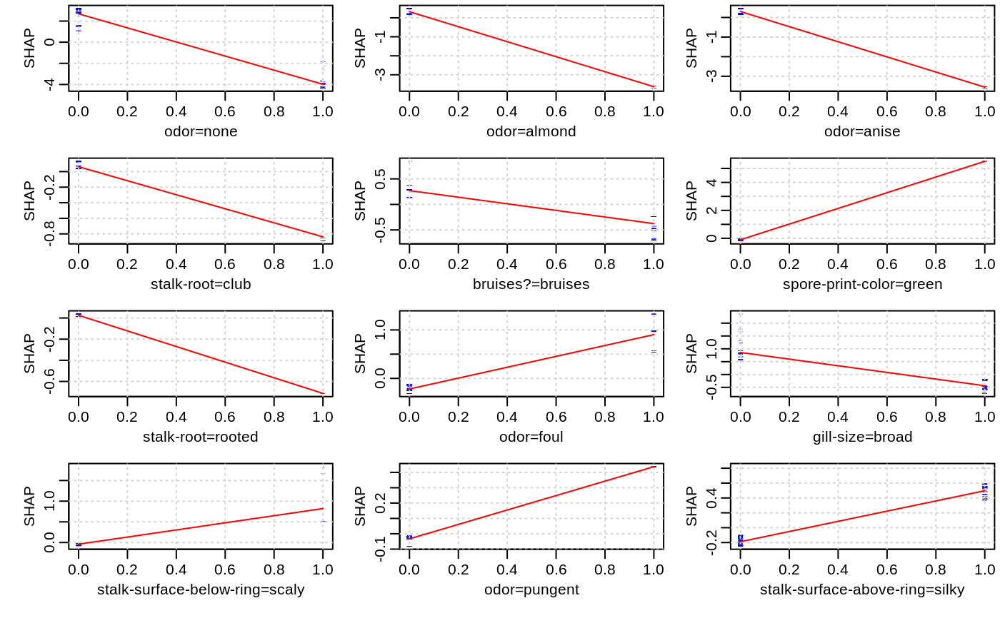
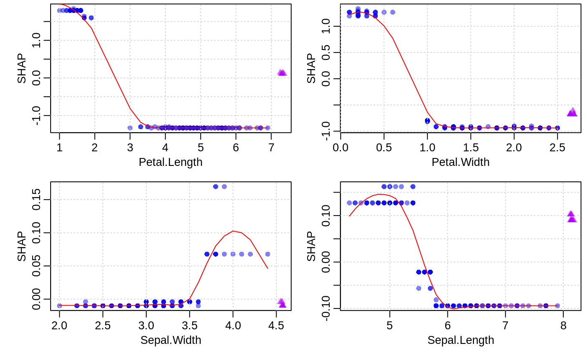
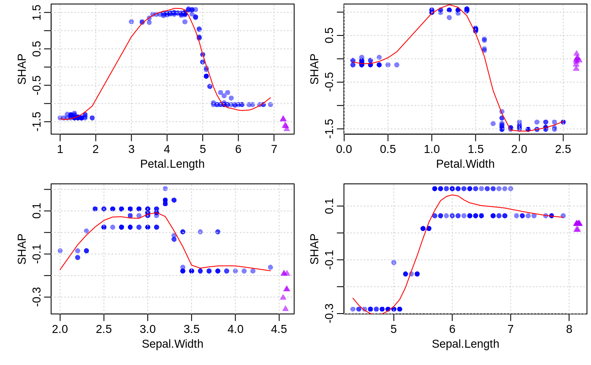
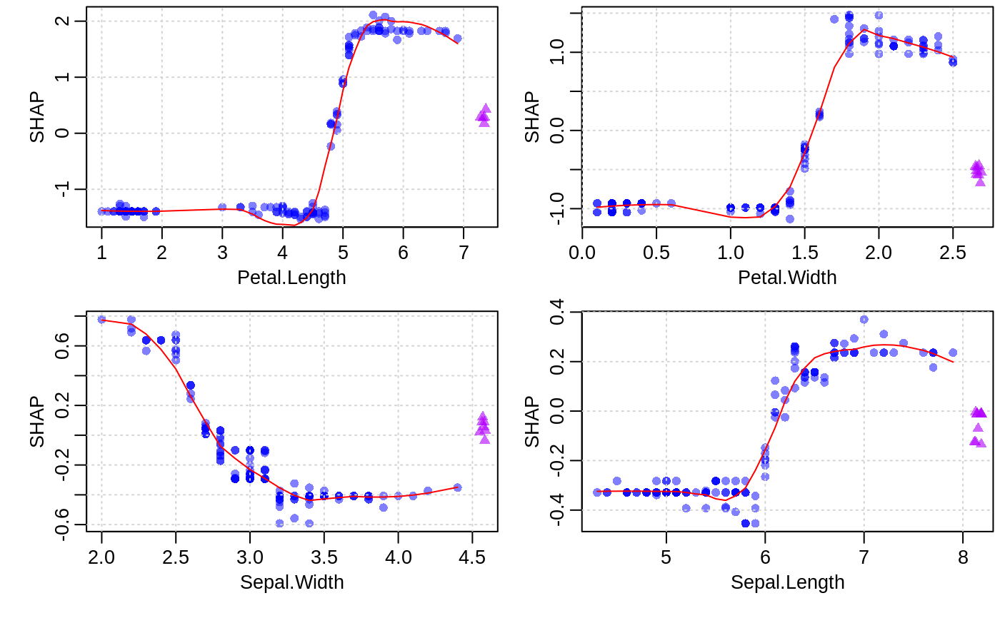

Visualizing the SHAP feature contribution to prediction dependencies on feature value.
xgb.plot.shap(data, shap_contrib = NULL, features = NULL, top_n = 1, model = NULL, trees = NULL, target_class = NULL, approxcontrib = FALSE, subsample = NULL, n_col = 1, col = rgb(0, 0, 1, 0.2), pch = ".", discrete_n_uniq = 5, discrete_jitter = 0.01, ylab = "SHAP", plot_NA = TRUE, col_NA = rgb(0.7, 0, 1, 0.6), pch_NA = ".", pos_NA = 1.07, plot_loess = TRUE, col_loess = 2, span_loess = 0.5, which = c("1d", "2d"), plot = TRUE, ...)
| data | data as a |
|---|---|
| shap_contrib | a matrix of SHAP contributions that was computed earlier for the above
|
| features | a vector of either column indices or of feature names to plot. When it is NULL,
feature importance is calculated, and |
| top_n | when |
| model | an |
| trees | passed to |
| target_class | is only relevant for multiclass models. When it is set to a 0-based class index, only SHAP contributions for that specific class are used. If it is not set, SHAP importances are averaged over all classes. |
| approxcontrib | passed to |
| subsample | a random fraction of data points to use for plotting. When it is NULL, it is set so that up to 100K data points are used. |
| n_col | a number of columns in a grid of plots. |
| col | color of the scatterplot markers. |
| pch | scatterplot marker. |
| discrete_n_uniq | a maximal number of unique values in a feature to consider it as discrete. |
| discrete_jitter | an |
| ylab | a y-axis label in 1D plots. |
| plot_NA | whether the contributions of cases with missing values should also be plotted. |
| col_NA | a color of marker for missing value contributions. |
| pch_NA | a marker type for NA values. |
| pos_NA | a relative position of the x-location where NA values are shown:
|
| plot_loess | whether to plot loess-smoothed curves. The smoothing is only done for features with more than 5 distinct values. |
| col_loess | a color to use for the loess curves. |
| span_loess | the |
| which | whether to do univariate or bivariate plotting. NOTE: only 1D is implemented so far. |
| plot | whether a plot should be drawn. If FALSE, only a lits of matrices is returned. |
| ... | other parameters passed to |
In addition to producing plots (when plot=TRUE), it silently returns a list of two matrices:
data the values of selected features;
shap_contrib the contributions of selected features.
These scatterplots represent how SHAP feature contributions depend of feature values. The similarity to partial dependency plots is that they also give an idea for how feature values affect predictions. However, in partial dependency plots, we usually see marginal dependencies of model prediction on feature value, while SHAP contribution dependency plots display the estimated contributions of a feature to model prediction for each individual case.
When plot_loess = TRUE is set, feature values are rounded to 3 significant digits and
weighted LOESS is computed and plotted, where weights are the numbers of data points
at each rounded value.
Note: SHAP contributions are shown on the scale of model margin. E.g., for a logistic binomial objective, the margin is prediction before a sigmoidal transform into probability-like values. Also, since SHAP stands for "SHapley Additive exPlanation" (model prediction = sum of SHAP contributions for all features + bias), depending on the objective used, transforming SHAP contributions for a feature from the marginal to the prediction space is not necessarily a meaningful thing to do.
Scott M. Lundberg, Su-In Lee, "A Unified Approach to Interpreting Model Predictions", NIPS Proceedings 2017, https://arxiv.org/abs/1705.07874
Scott M. Lundberg, Su-In Lee, "Consistent feature attribution for tree ensembles", https://arxiv.org/abs/1706.06060
data(agaricus.train, package='xgboost') data(agaricus.test, package='xgboost') bst <- xgboost(agaricus.train$data, agaricus.train$label, nrounds = 50, eta = 0.1, max_depth = 3, subsample = .5, method = "hist", objective = "binary:logistic", nthread = 2, verbose = 0) xgb.plot.shap(agaricus.test$data, model = bst, features = "odor=none")contr <- predict(bst, agaricus.test$data, predcontrib = TRUE) xgb.plot.shap(agaricus.test$data, contr, model = bst, top_n = 12, n_col = 3)# multiclass example - plots for each class separately: nclass <- 3 nrounds <- 20 x <- as.matrix(iris[, -5]) set.seed(123) is.na(x[sample(nrow(x) * 4, 30)]) <- TRUE # introduce some missing values mbst <- xgboost(data = x, label = as.numeric(iris$Species) - 1, nrounds = nrounds, max_depth = 2, eta = 0.3, subsample = .5, nthread = 2, objective = "multi:softprob", num_class = nclass, verbose = 0) trees0 <- seq(from=0, by=nclass, length.out=nrounds) col <- rgb(0, 0, 1, 0.5) xgb.plot.shap(x, model = mbst, trees = trees0, target_class = 0, top_n = 4, n_col = 2, col = col, pch = 16, pch_NA = 17)xgb.plot.shap(x, model = mbst, trees = trees0 + 1, target_class = 1, top_n = 4, n_col = 2, col = col, pch = 16, pch_NA = 17)xgb.plot.shap(x, model = mbst, trees = trees0 + 2, target_class = 2, top_n = 4, n_col = 2, col = col, pch = 16, pch_NA = 17)